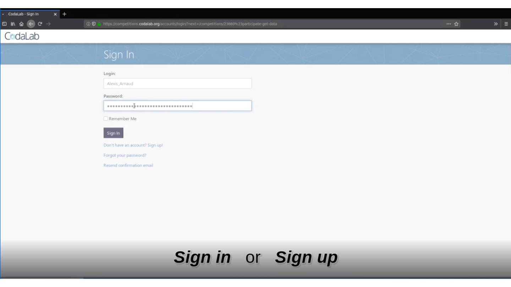
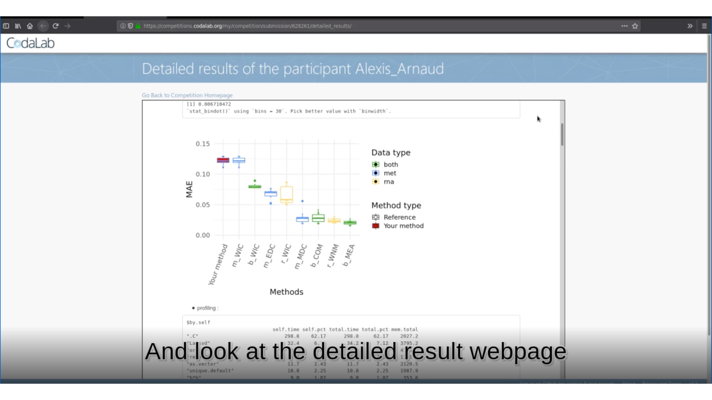
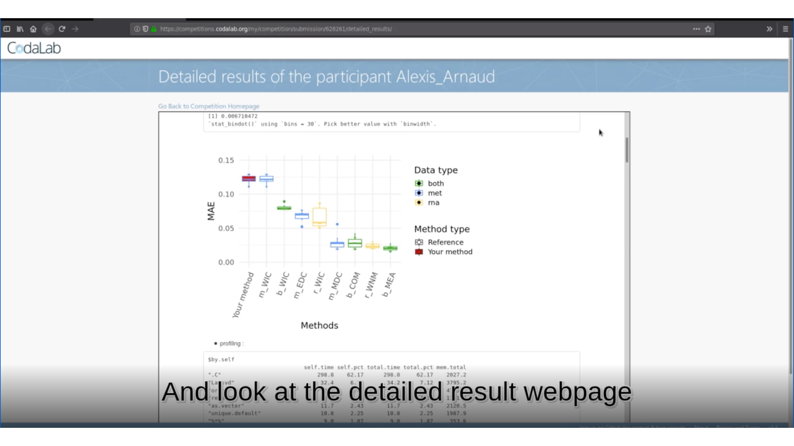

Deconbench is available on Codalab here.
This video shows how to use the benchmarking platform:
You can directly access the platform from this link.
Or you can search the platform from Codalab: 

First you need to create an account:



Then, you will be able to download the necessary files: stating_kit.zip and data_public.zip that are in the Participate tab>Files item.
On your local machine, unzip the two zip files stating_kit.zip and data_public.zip. Copy the data sets (D_met1_public.rds, D_rna1_public.rds, A_1_public.rds) into the unziped starting_kit directory.
Then open R from the starting_kit directory, (e.g. open strating_kit.Rmd with RStudio).
The unziped strating-kit directory contains now:
- A starting_kit.html corresponding to the vignette of the Benchmark (all useful information can be found here).
- A submission_script.Rmd to modify and to use to submit your code.
- The methylation and transcriptome D matrices, and the associated A matrix.
In the R console launch the following command:
rmarkdown::render(input = "submission_script.Rmd")This command line will create the zip file you need to submit your method on Deconbench!
You are alsmost there!üòÑ


 
 
üèÜ Is your method the best?